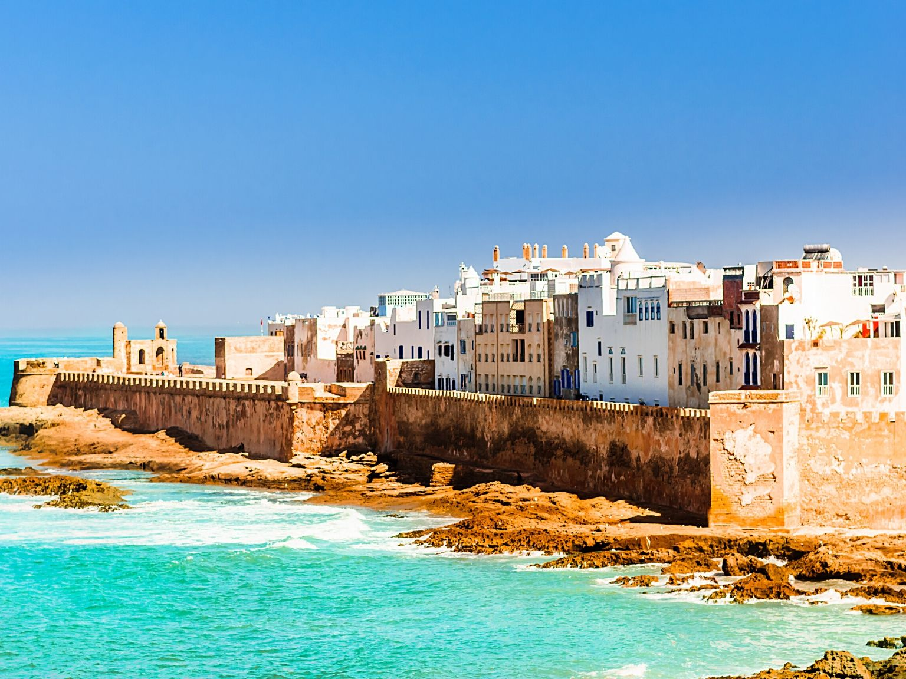
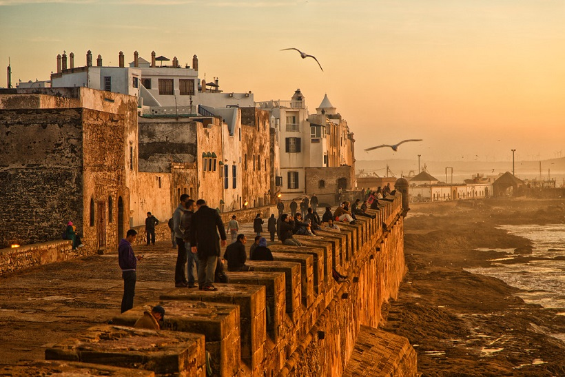
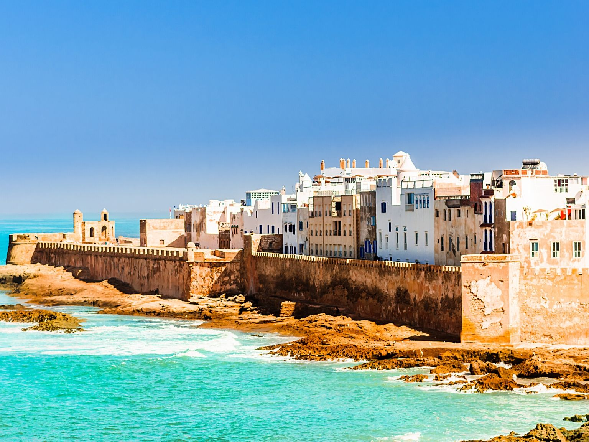
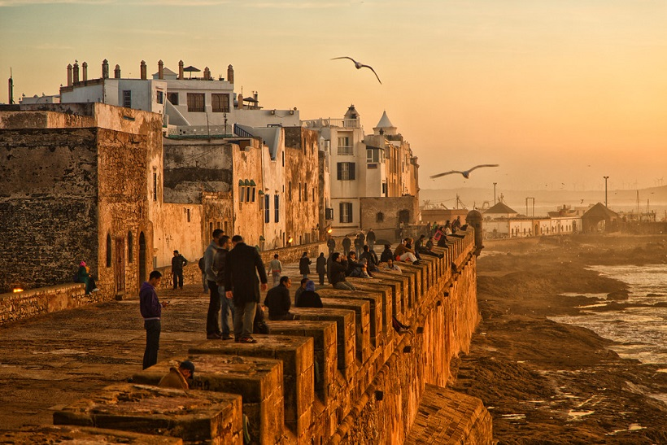

Essaouira : La perle de l'Atlantique
 



↔ Utilisez la barre orange ci-dessous ou Shift + Molette pour défiler.
Pourquoi choisir Essaouira ?
Loin de l'agitation des grandes stations balnéaires, Essaouira offre un cadre apaisant. Ses remparts historiques datant du 18ème siècle classés à l'UNESCO et sa plage immense en font la destination idéale pour se ressourcer.
Taux de visite : 1 millions de visiteurs par an
À découvrir sur place
- La Médina et ses remparts : Perdez-vous dans les ruelles bleues et blanches classées à l'UNESCO, découvrez les artisans du bois de Thuya et marchez sur la Skala face à l'océan.
- Le port de pêche traditionnel : Assistez au retour des bateaux bleus typiques et dégustez du poisson frais grillé directement sur les quais dans une ambiance authentique.
- Sports de glisse (Kitesurf) : Grâce aux alizés constants, la baie d'Essaouira est un spot mondialement connu pour s'initier ou se perfectionner au kitesurf et au windsurf.